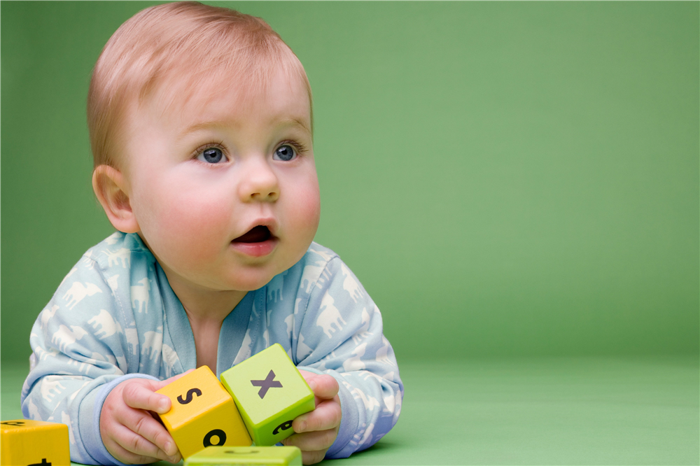

Why don’t babies talk like adults?
Kids go from 'goo-goo' to talkative one step at a time
A recent e-trade advertisement shows a baby speaking directly to the camera: 'Look at this,’ he says, I'm a free man. I go anywhere I want now.’ He describes his stock-buying activities, and then his phone rings. This advertisement proves what comedians have known for years: few things are as funny as a baby who talks like an adult. But it also raises an important question: Why don’t young children express themselves clearly like adults?
Many people assume children learn to talk by copying what they hear. In other words, they listen to the words adults use and the situations in which they use them and imitate accordingly. Behaviourism, the scientific approach that dominated American cognitive science for the first half of the 20th century, made exactly this argument.
However, this ’copycat’ theory can’t explain why toddlers aren’t as conversational as adults. After all, you never hear literate adults express themselves in one-word sentences like ‘bottle’ or ‘doggie’. In fact, it's easy for scientists to show that a copycat theory of language acquisition can’t explain children’s first words. What is hard for them to do is to explain these first words, and how they fit into the language acquisition pattern.
Over the past half-century, scientists have settled on two reasonable possibilities. The first of these is called the ‘mental-developmental hypothesis’. It states that one-year-olds speak in baby talk because their immature brains can’t handle adult speech. Children don't learn to walk until their bodies are ready. Likewise, they don't speak multi-word sentences or use word endings and function words (‘Mummy opened the boxes') before their brains are ready.
The second is called the ‘stages-of-language hypothesis’, which states that the stages of progress in child speech are necessary stages in language development.
A basketball player can't perfect his or her jump shot before learning to (1) jump and (2) shoot. Similarly, children learn to multiply after they have learned to add. This is the order in which children are taught - not the reverse. There's evidence, for instance, that children don't usually begin speaking in two-word sentences until they’ve learned a certain number of single words.
In other words, until they’ve crossed that linguistic threshold, the word-combination process doesn't get going.
The difference between these theories is this: under the mental-development hypothesis, language learning should depend on the child’s age and level of mental development when he or she starts learning a language. Linder the stages-of-language hypothesis, however, it shouldn’t depend on such patterns, but only on the completion of previous stages.
In 2007, researchers at Harvard University, who were studying the two theories, found a clever way to test them. More than 20,000 internationally adopted children enter the US each year. Many of them no longer hear their birth language after they arrive, and they must learn English more or less the same way infants do - that is, by listening and by trial and error. International adoptees don’t take classes or use a dictionary when they are learning their new tongue and most of them don’t have a well-developed first language. All of these factors make them an ideal population in which to test these competing hypotheses about how language is learned.
Neuroscientists Jesse Snedeker, Joy Geren and Carissa Shafto studied the language development of 27 children adopted from China between the ages of two and five years. These children began learning English at an older age than US natives and had more mature brains with which to tackle the task. Even so, just as with American-born infants, their first English sentences consisted of single words and were largely bereft of function words, word endings and verbs. The adoptees then went through the same stages as typical American- born children, albeit at a faster clip. The adoptees and native children started combining words in sentences when their vocabulary reached the same sizes, further suggesting that what matters is not how old you are or how mature your brain is, but the number of words you know.
This finding - that having more mature brains did not help the adoptees avoid the toddler-talk stage - suggests that babies speak in babytalk not because they have baby brains, but because they have only just started learning and need time to gain enough vocabulary to be able to expand their conversations. Before long, the one-word stage will give way to the two-word stage and so on. Learning how to chat like an adult is a gradual process.
But this potential answer also raises an even older and more difficult question. Adult immigrants who learn a second language rarely achieve the same proficiency in a foreign language as the average child raised as a native speaker. Researchers have long suspected there is a ‘critical period’ for language development, after which it cannot proceed with full success to fluency. Yet we still do not understand this critical period or know why it ends.
Questions 26-29
Questions 26-29
Do the following statements agree with the claims of the writer in the reading passage?
Write
YES if the statement agrees with the claims of the writer
NO if the statement contradicts the claims of the writer
NOT GIVEN if it is impossible to say what the writer thinks about this
26 People are extremely amused when they see a baby talk like an adult.
27 Behaviourists of the early 20th century argued that children learn to speak by copying adults.
28 Children have more conversations with adults than with other children.
29 Scientists have found it easy to work out why babies use one-word sentences.
Questions 30-34
Questions 30-34
Complete the summary using the list of words and phrases, A-H, below.
Two theories about babytalk
According to the writer, there are two main theories related to babytalk. One states that a young child’s brain needs 30 to master language, in the same way that it does to master other abilities such as 31 . The second theory states that a child’s 32 is the key factor. According to this theory, some key steps have to occur in a logical sequence before 33 occurs. Children's 34 develops in the same way.
|
A |
vocabulary level |
E |
mathematical knowledge |
|
B |
physical movement |
F |
sentence formation |
|
C |
time |
G |
learning |
|
D |
attention |
H |
teaching |
Questions 35-39
Questions 35-39
Choose the correct letter, A, B, C or D
35 What is the writer’s main purpose in the seventh paragraph?
A to give reasons why adopted children were used in the study
B to reject the view that adopted children need two languages
C to argue that culture affects the way children learn a language
D to justify a particular approach to language learning
36 Snedeker, Geren and Shafto based their study on children who
A were finding it difficult to learn English.
B had come from a number of language backgrounds.
C were learning English at a later age than US children.
D had taken English lessons in China.
37 What aspect of the adopted children's language development differed from that of US-born children?
A their first words
B the way they learnt English
C the rate at which they acquired language
D the point at which they started producing sentences
38 What did the Harvard finding show?
A Not all toddlers use babytalk.
B Language learning takes place in ordered steps.
C Some children need more conversation than others.
D Not all brains work in the same way.
39 When the writer says ‘critical period’, he means a period when .
A studies produce useful results.
B adults need to be taught like children.
C immigrants want to learn another language.
D language learning takes place effectively.
---End of the Test---
Please Submit to view your score, solution and explanations.